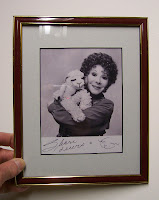

Second chance offer
2/6/2010
{kind=link}

This framed photo of Shari Lewis was unclaimed in an earlier drawing.
It has now been re-gifted and the winner is: Evelyn Hickman who wrote:
"Shari Lewis was a big inspiration for me. I loved watching her on TV and recorded many of her programs -- which I still enjoy as an "older adult." I saw her in a live performance at Reading, PA back in the 80's and was very hopeful of getting an autographed souvenir. At the end of the performance and Shari had left the stage, a gentleman came out and announced that Shari would not be available for autographs -- that she was ill and on her way to the emergency room. The desire for an autographed souvenir was quickly replaced by a concern for her health. I never had the opportunity to see her in a live performance again, and am still lacking that coveted treasure."
Thanks to all who took the time to respond to this second chance offer. I do have more Shari Lewis collectibles that will turn up on future drawings.